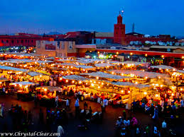
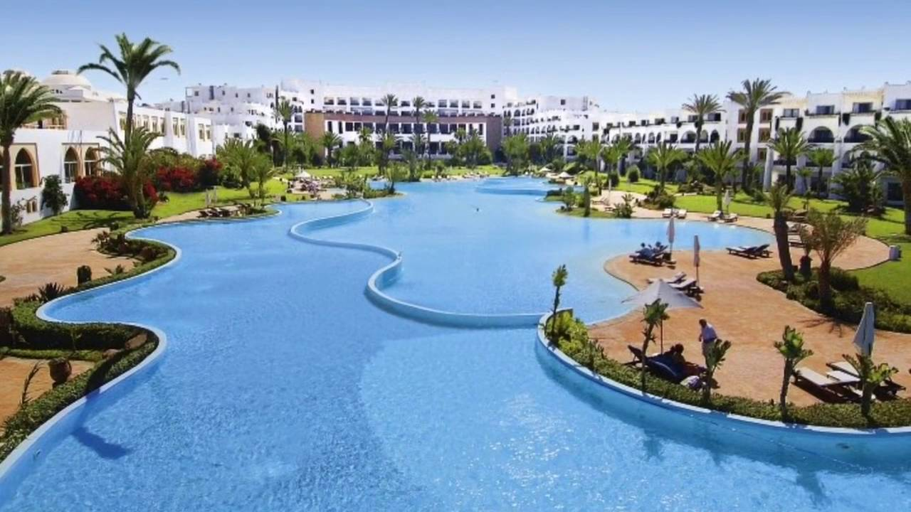

الطبيعية والجغرافية التي تمتد على أراضيه، ما بين الجبال والوديان والصحاري والمرتفعات المكسوة بالثلوج والبحيرات العذبة، بالإضافة إلى الشواطئ الممتدة على سواحل البحر الأبيض والمحيط الأطلسي، الأمر الذي قدم المغرب على قائمة الدول العالمية ذات الطبيعة الخلابة، فأصبحت من أهم المحطات التي يقصدها محبّو الطبيعة للاستمتاع بالمناظر الطبيعية المدهشة.
الشواطئ الرملية
تمتاز المغرب بالشواطئ الرملية الممتدةعلى مساحات شاسعة
جبال اطلس
تمتد جبال الأطلس على مساحة تقدر ب 2.090 كيلومتراً عبر بلدان المغرب العربي في المغرب والجزائر وتونس، كما يمتد من المحيط الأطلنطي جنوب أكادير حتى البحر المتوسط بالقرب من تونس، وتتكون هذه السلسلة من نطاقات متوازية، حيث تشتمل من الغرب إلى الشرق على الأطلس الكبير والأطلس المتوسط في المغرب، والأطلس الصحراوي وجبال الأوراس في الجزائر، وجبال خمير والمجردة وتبسة في تونس وهي امتدادات للنطاقات الجزائرية، كما تشتمل بعض النطاقات على نطاق الريف على طول ساحل المغرب المتوسطي.
اهم المدن
افران
افران,سويسرا الصغرى
تقع مدينة إفران في المغرب على ارتفاع 5،460 قدم فوق مستوى سطح البحر الأبيض المتوسط، وهي مدينة لا تشبه أي مدينة أخرى في المغرب. فهذه المدينة المشيدة فوق تلة صغيرة، تشعرك وكأنك في جبال الألب السويسرية، نظراً لمنازلها ذات الاسطح الحمراء الأنيقة، وبساتين الزهور الملونة، والحدائق الطبيعية والبحيرات والثلوج التي تغطي الأشجار خلال فصل الشتاء. هذا المزيج من الجمال الطبيعي الرائع منح المدينة التي صممت على الطراز الأوروبي لقب "سويسرا المغربية".
شفشاون
شفشاون المدينة الزرقاء
تقول الروايات، إن لونها الأزرق يعود إلى أن الأندلسيين والموريسكيين الذين نزحوا إليها من الأندلس بعد تعرضهم للتطهير الديني والعرقي ضد غير المسيحيين. أرادوا أن يكون هذا اللون رمزاً للسلام والتسامح، ولم يكونوا يعرفون أنهم بهذا ساهموا في لقبها الحالي بـ«الجوهرة الزرقاء».لكن سحرها لا يقتصر على لونها فحسب، فهي تشتهر أيضاً بهدوئها وبطيبة أهلها الذين ورغم اختلاطهم بالسياح من جميع أرجاء العالم، مُتشبثون بطبيعتهم الجبلية الأصيلة، سواء في معاملاتهم مع الغير أو في أزيائهم أو أسلوب حياتهم البسيط.
جبال اطلس
جبال اطلس
تمتد جبال الأطلس على مساحة تقدر ب 2.090 كيلومتراً عبر بلدان المغرب العربي في المغرب والجزائر وتونس، كما يمتد من المحيط الأطلنطي جنوب أكادير حتى البحر المتوسط بالقرب من تونس، وتتكون هذه السلسلة من نطاقات متوازية، حيث تشتمل من الغرب إلى الشرق على الأطلس الكبير والأطلس المتوسط في المغرب، والأطلس الصحراوي وجبال الأوراس في الجزائر، وجبال خمير والمجردة وتبسة في تونس وهي امتدادات للنطاقات الجزائرية، كما تشتمل بعض النطاقات على نطاق الريف على طول ساحل المغرب المتوسطي.
احجز سيارتك معنا
احجز معنا وسيلة مواصلاتك قبل وصولك للمغرب لدينا مجموعة خيارات من جميع انواع السيارات الفخمة والمتوسطة
Mercedes Benz
Hyundai
jeep Cars 4x4
السياحة في المغرب
السياحة في المغرب بلد الجمال وسياحة المناظر الطبيعية الفريدة، وتمتاز السياحة في الغرب بتنوعها اذ تحتوي على العديد من انواع السياحات ومنها السياحة الجبلية وسياحة المدن العريقة، والسياحة الدينية ، والسياحة الرياضية
وقد اصبحت السياحة في المغرب وجهة عالمية بفضل ما تمتلكه من مقومات تحقق لها ذلك
اذ ان المغرب العربي استفاد من موقعه في القارة الافريقية وانفتاحه على البحر الابيض المتوسط، بالاضافة الى كونه واحد من بلدان الوطن العربي، ليكون البلد المضيف للعديد من السياح العرب والاجانب
افضل مواسم السياحة في مدن المغرب
افضل مواسم السياحة في المغرب يمتد من شهر مارس الى شهر مايو، اذ تتميز هذه الفترة بالجو المعتدل والجميل في مدن المغرب، حيث تتساقط الامطار الخفيفة، بالاضافة الى طقس دافئ ومريحاً للسياحة بشكل عام
تكلفة السفر الى المغرب
تكلفة السفر الى المغرب لشخصين تتراوح بين 150-250 دولار يومياً
وقد تزداد وتختلف على حسب الرغبة
من اهم المدن عند زيارة المغرب
جبال اطلس
على بعد 45 كلم من مدينة مراكش، تقع ستي فاطمة. محببة لمحبي المغامرات، نظراً لتنوع النشاطات التي يمكن القيام بها. تحتوي الكثير من الشلالات والعيون. هنا يستمتع الزائر بالمغامرات الرياضية المتنوعة، كالقفز من أعلى الشلال، أو حتى القيام برياضة التجديف "الرافتينغ" في الأنهار.
وإن كنتم من محبي المغامرات، فيمكنكم تسلق الجبال، واكتشاف أنواع نادرة من النباتات، كما يمكنكم التعرف على الحيوانات البرية النادرة، والتي بدأت بالانقراض، من أبرزها الأيل الأفريقي. تتميز القرية أيضاً ببساطتها، المنازل والبيوت مازالت على شكلها القديم، فيشعر الزائر وكأنه عاد بالزمن إلى أكثر من 50 عاماً. وإن أردتم التسوق، فما رأيكم بزيارة السوق الشعبي، حيث المنتجات الحرفية، والمأكولات التراثية التي تحضر بعناية من قبل سكان الأطلس الكبير
مراكش

هل تبحث عن أشياء للقيام بها خلال السياحة في مراكش التي تعد من أجمل المدن المغربية؟ أسواق المدينة الملونة والمطاعم الراقية والمتاجر الكبرى في كيليز تدعو المسافرين لاستكشاف مزيج مراكش المختلف بين القديم والحديث. سنقترح عليك 10 أشياء يمكنك الاستمتاع بها في مراكش بما في ساحر الثعابين في ساحة جامع الفناء والاسترخاء في حمام مغربي يتدفق على المدينة السائحين أو كما يطلق عليها المدينة الجديدة عند وصولهم إلى مراكش. خلال النهار ستجد ساحر الثعابين ووسائل الترفيه المحلية، وفنانين وشم الحناء علاوةً على زيارة العديد من أماكن التسوق المحلية في ساحة جامع الفناء. أما في الليل، تتحول الشوارع القديمة إلى منطقة ترفيهية نابضة بالحياة وتُكملها الموسيقى الصاخبة والراقصين المحليين ورواة القصص التقليديين. وعليك تجربة الأطباق الطعام المفضلة في مراكش من الحملان والكسكس مع كوب من عصير الفواكه الطازجة. كل ليلة في مراكش مختلفة.
اغادير

لسياحة في اغادير المغرب هي واحدة من أكبر مدن المغرب وتقع على شاطئ المحيط الأطلسي بالقرب من جبال الاطلسي وتعتبر من اهم وجهات السياحة في المغرب حيث أنها تضم العديد من المعالم السياحية والمنتجعات الصحية وملاعب الغولف والشواطئ النظيفة والحدائق والمنتزهات وغيرها.
تعد السياحة في اغادير من أهم موارد المدينة فهي تذخر بالمقومات السياحية والطبيعة المميزة، ومن الأمثلة على ذلك قصبة أغادير أوفلا التي تتربع على قمة الجبل وحديقة أولهاو وغيرها الكثير
ابحث عن وجهتك
room
اختر وجهتك
store
احجز ادوات سفرك
airplanemode_active
احجز بأرخص الاسعار
Follow Touareg-Travel
تابعنا على وسائل التواصل الاجتماعي للحصول على افضل العروض